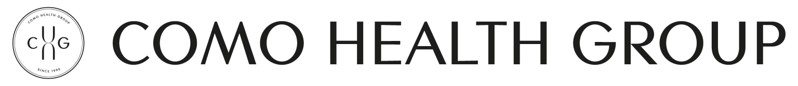

Why Choose Us

Personalised, Natural
Therapies
Tailored treatment plans that address your unique health needs using evidence-based natural medicine and traditional healing practices.
Warm, Expert
Professionals
Committed to your wellbeing with university-trained practitioners who combine deep knowledge with genuine care and compassion.
Results-Focused, Holistic Approach
We address the root causes of illness, not just symptoms, to create sustainable improvements in your health and vitality.